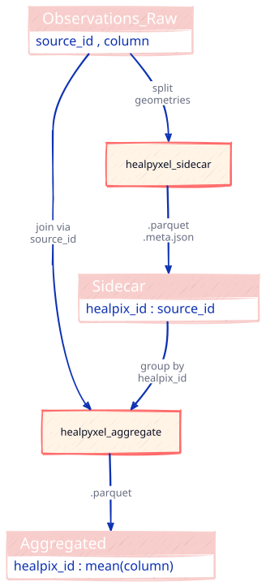
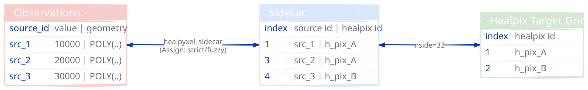
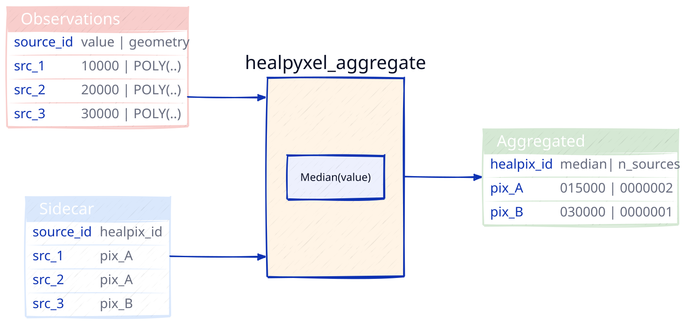

from pathlib import Path
import subprocess
def render_d2_cli(
diagram_str: str,
output_path: Path,
theme: int = 0,
sketch: bool = True,
pad: int = 10,
scale: float = 1.5,
layout: str = "dagre",
keep_source: bool = True
) -> bool:
"""
Render d2 diagram using CLI (deterministic, no browser required).
Parameters
----------
diagram_str : str
D2 DSL definition.
output_path : Path
Where to save SVG (parent dirs created automatically).
theme : int
D2 theme ID (0=Neutral, 1=Flagship Terrastruct, ...).
sketch : bool
Enable hand-drawn style.
pad : int
Padding around diagram (pixels).
scale : float
Zoom multiplier.
layout : str
Layout engine: 'dagre' (default), 'elk', 'tala'.
keep_source : bool
If True, preserve .d2 source file alongside .svg output.
Returns
-------
bool
True if render succeeded; False if d2 CLI not found or render failed.
Examples
--------
>>> diagram = "A -> B: label"
>>> render_d2_cli(diagram, Path('diagrams/flow.svg'))
True
Notes
-----
- d2 requires a file path (no stdin support), so we write .d2 to disk.
- By default, .d2 source is preserved for version control and debugging.
- d2 overwrites existing .svg files automatically (no --force flag).
"""
# Check if d2 CLI is installed
try:
subprocess.run(['d2', '--version'], capture_output=True, check=True, text=True)
except (subprocess.CalledProcessError, FileNotFoundError):
print("⚠ d2 CLI not found. Install: https://d2lang.com/tour/install")
return False
if not isinstance(output_path, Path):
output_path = Path(output_path)
# Write .d2 source alongside .svg output (not a temp file)
d2_source_path = output_path.with_suffix('.d2')
d2_source_path.write_text(diagram_str)
# Build d2 command
cmd = [
'd2',
'--theme', str(theme),
'--pad', str(pad),
'--scale', str(scale),
'--layout', layout,
]
if sketch:
cmd.append('--sketch')
cmd.extend([str(d2_source_path), str(output_path)])
# Run d2
result = subprocess.run(cmd, capture_output=True, text=True)
if result.returncode != 0:
print(f"✗ d2 failed: {result.stderr}")
print(f" Source preserved for debugging: {d2_source_path}")
return False
# Optionally clean up .d2 source on success
if not keep_source:
d2_source_path.unlink()
print(f"✓ Saved: {output_path} ({output_path.stat().st_size} bytes)")
if keep_source:
print(f" Source: {d2_source_path}")
return True# filepath: nbs/utils_diagrams.ipynb
# UNIFIED PIPELINE DIAGRAM (Split-Apply-Combine)
# Minimalist: empty SQL tables, no legend
pipeline_diagram = """
direction: down
# ===== PHASE 1: SPLIT =====
Observations_Raw: {
shape: sql_table
style: {fill: "#f8cecc"}
"source_id , column"
}
healpyxel_sidecar: {
shape: rectangle
style: {fill: "#fff4e6"; stroke: "#ff6b6b"; stroke-width: 2}
}
Sidecar: {
shape: sql_table
style: {fill: "#f8cecc"}
"healpix_id : source_id"
}
# ===== PHASE 2: APPLY =====
healpyxel_aggregate: {
shape: rectangle
style: {fill: "#fff4e6"; stroke: "#ff6b6b"; stroke-width: 2}
}
# ===== PHASE 3: COMBINE =====
Aggregated: {
shape: sql_table
style: {fill: "#f8cecc"}
"healpix_id : mean(column)"
}
# ===== CONNECTIONS =====
Observations_Raw -> healpyxel_sidecar: "split\\ngeometries"
healpyxel_sidecar -> Sidecar: ".parquet\\n.meta.json"
Observations_Raw -> healpyxel_aggregate: "join via\\nsource_id"
Sidecar -> healpyxel_aggregate: "group by\\nhealpix_id"
healpyxel_aggregate -> Aggregated: ".parquet"
"""
render_d2_cli(pipeline_diagram, Path('Pipeline_End-to-End.svg'), theme=0, sketch=True, layout='dagre', scale = 0.8)✓ Saved: Pipeline_End-to-End.svg (102421 bytes)
Source: Pipeline_End-to-End.d2True# filepath: nbs/utils_diagrams.ipynb
# UNIFIED PIPELINE DIAGRAM (Split-Apply-Combine)
# Minimalist: empty SQL tables, no legend
pipeline_diagram_geo = """
direction: down
# ===== PHASE 1: SPLIT =====
Observations_Raw: {
shape: sql_table
style: {fill: "#f8cecc"}
"source_id , column"
}
healpyxel_sidecar: {
shape: rectangle
style: {fill: "#fff4e6"; stroke: "#ff6b6b"; stroke-width: 2}
}
Sidecar: {
shape: sql_table
style: {fill: "#f8cecc"}
"healpix_id : source_id"
}
# ===== PHASE 2: APPLY =====
healpyxel_aggregate: {
shape: rectangle
style: {fill: "#fff4e6"; stroke: "#ff6b6b"; stroke-width: 2}
}
# ===== PHASE 3: COMBINE =====
Aggregated: {
shape: sql_table
style: {fill: "#f8cecc"}
"healpix_id : mean(column)"
}
Geoparquet: {
shape: sql_table
style: {fill: "#f8cecc"}
"healpix_id : mean(column) : geometry"
}
# ===== PHASE 2: APPLY =====
healpyxel_to_geoparquet: {
shape: rectangle
style: {fill: "#fff4e6"; stroke: "#ff6b6b"; stroke-width: 2}
}
# ===== CONNECTIONS =====
Observations_Raw -> healpyxel_sidecar: "split\\ngeometries"
healpyxel_sidecar -> Sidecar: ".parquet\\n.meta.json"
Observations_Raw -> healpyxel_aggregate: "join via\\nsource_id"
Sidecar -> healpyxel_aggregate: "group by\\nhealpix_id"
healpyxel_aggregate -> Aggregated: ".parquet"
Aggregated -> healpyxel_to_geoparquet: "attach\\ngeometry"
healpyxel_to_geoparquet -> Geoparquet: ".geo.parquet"
"""
# render_d2_cli(pipeline_diagram_geo, Path('Pipeline_End-to-End_Geo.svg'), theme=0, sketch=True, layout='dagre')Pipeline_End-to-End

# In nbs/utils_d2_diagrams.ipynb or a separate "generate_diagrams.ipynb"
from pathlib import Path
# Sidecar diagram
sidecar_diagram = """
direction: right
# 1. INITIAL DATA
Observations: {
shape: sql_table
style: {fill: "#f8cecc"}
source_id: "value | geometry"
"src_1 ": "10000 | POLY(..)"
"src_2 ": "20000 | POLY(..)"
"src_3 ": "30000 | POLY(..)"
}
# 2. SIDECAR
Sidecar: {
shape: sql_table
style: {fill: "#dae8fc"}
index: "source id | healpix id"
"1": "src_1 | h_pix_A"
"3": "src_2 | h_pix_A"
"4": "src_3 | h_pix_B"
}
# 3. AGGREGATED + GEOMETRY
Healpix Target Grid: {
shape: sql_table
style: {fill: "#d5e8d4"}
index: "healpix id"
"1": "h_pix_A"
"2": "h_pix_B"
}
# PROCESS FLOW
Observations <-> Sidecar: "healpyxel_sidecar\\n(Assign: strict/fuzzy)" {style: {stroke-width: 2}}
Sidecar <-> Healpix Target Grid: nside=32
"""
render_d2_cli(sidecar_diagram,'Sidecar.svg')
# Aggregate diagram
aggregate_diagram = """
direction: right
# INPUTS
Observations: {
shape: sql_table
style: {fill: "#f8cecc"}
source_id: "value | geometry"
"src_1 ": "10000 | POLY(..)"
"src_2 ": "20000 | POLY(..)"
"src_3 ": "30000 | POLY(..)"
}
Sidecar: {
shape: sql_table
style: {fill: "#dae8fc"}
source_id: "healpix_id"
"src_1": "pix_A"
"src_2": "pix_A"
"src_3": "pix_B"
}
# AGGREGATION FUNCTION
healpyxel_aggregate: {
style: {fill: "#fff4e6"}
"Median(value)"
}
# OUTPUT
Aggregated: {
shape: sql_table
style: {fill: "#d5e8d4"}
healpix_id: "median| n_sources"
"pix_A": "015000 | 0000002"
"pix_B": "030000 | 0000001"
}
# FLOW
Observations -> healpyxel_aggregate #: "group by\\nhealpix_id"
Sidecar -> healpyxel_aggregate #: "via source_id"
healpyxel_aggregate -> Aggregated
"""
render_d2_cli(aggregate_diagram, 'Aggregate.svg')
# Combine diagram
combine_diagram = """
direction: right
# INPUT
Aggregated: {
shape: sql_table
style: {fill: "#d5e8d4"}
healpix_id: "median | n_sources"
"pix_A": "015000 | 00000002"
"pix_B": "030000 | 00000001"
}
# GEOMETRY ATTACHMENT
healpyxel_to_geoparquet: {
style: {fill: "#fff4e6"}
"HEALPix Cell Geometry\\nvia healpy"
}
# OUTPUT
Aggregated_Geo: {
shape: sql_table
style: {fill: "#e1d5e7"}
healpix_id: "median | n_sources | geometry"
"pix_A": "015000 | 00000002 | POLY(..)"
"pix_B": "030000 | 00000001 | POLY(..)"
}
# FLOW
Aggregated -> healpyxel_to_geoparquet
healpyxel_to_geoparquet -> Aggregated_Geo
"""
render_d2_cli(combine_diagram, 'Combine.svg')✓ Saved: Sidecar.svg (94680 bytes)
Source: Sidecar.d2
✓ Saved: Aggregate.svg (92382 bytes)
Source: Aggregate.d2
✓ Saved: Combine.svg (87628 bytes)
Source: Combine.d2TrueSidecar

Agggregate

Combine 
fig, axes = plt.subplots(1, 3, figsize=(18, 6))
plot_config = {
'cmap':'Spectral_r',
'legend':False,
'edgecolor':'black',
'linewidth':0.25,
}
# Plot nside=8
gdf_projected_8.plot(
column=gdf_projected_8.index,
ax=axes[0],
**plot_config
)
axes[0].set_title('HEALPix Grid (nside=8)')
axes[0].set_aspect('equal')
axes[0].axis('off')
# Plot nside=16
gdf_projected_16.plot(
column=gdf_projected_16.index,
ax=axes[1],
**plot_config,
)
axes[1].set_title('HEALPix Grid (nside=16)')
axes[1].set_aspect('equal')
axes[1].axis('off')
# Plot nside=32
gdf_projected_32.plot(
column=gdf_projected_32.index,
ax=axes[2],
**plot_config
)
axes[2].set_title('HEALPix Grid (nside=32)')
axes[2].set_aspect('equal')
axes[2].axis('off')
plt.tight_layout()
plt.savefig('healpix_grids_comparison.png', dpi=100, bbox_inches='tight')/home/kidpixo/miniconda3/envs/mertis/lib/python3.11/site-packages/shapely/constructive.py:829: RuntimeWarning: invalid value encountered in normalize
return lib.normalize(geometry, **kwargs)
/home/kidpixo/miniconda3/envs/mertis/lib/python3.11/site-packages/shapely/constructive.py:829: RuntimeWarning: invalid value encountered in normalize
return lib.normalize(geometry, **kwargs)
/home/kidpixo/miniconda3/envs/mertis/lib/python3.11/site-packages/shapely/constructive.py:829: RuntimeWarning: invalid value encountered in normalize
return lib.normalize(geometry, **kwargs)
/home/kidpixo/miniconda3/envs/mertis/lib/python3.11/site-packages/shapely/constructive.py:829: RuntimeWarning: invalid value encountered in normalize
return lib.normalize(geometry, **kwargs)